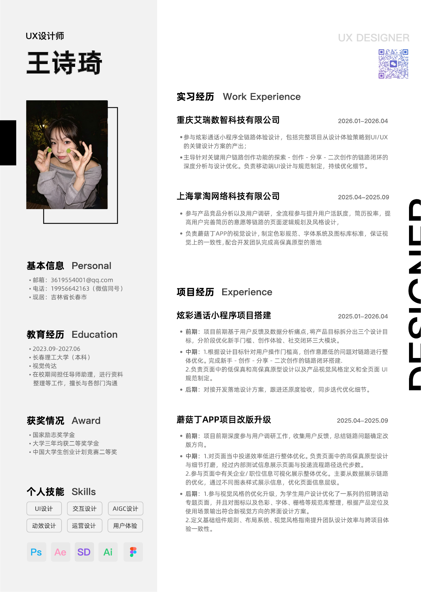

炫彩通话小程序搭建UX / UI 设计实习 · 产品体验与界面优化


正在把观察、原型与视觉，慢慢煮成让人愿意使用的体验。
你好，我是王诗琦，一名关注真实反馈与细节温度的 UX / UI 设计师。




从用户问题、产品链路到视觉规范，我参与完整设计过程，也持续用数据验证方案是否真正有效。
UI 设计实习生 · 设计部
UX 设计实习生 · 通信与传媒事业部
研究、原型与视觉不是三段孤立流程，而是一组持续校准方向的方法。
从访谈、反馈和数据中找到真正影响体验的节点，把模糊问题转化为可验证的设计目标。
用户研究 / 竞品分析 / 体验地图↗从信息架构到高保真原型，用真实任务反复验证流程、层级与关键反馈。
流程设计 / Figma 原型 / 可用性测试↗将字体、色彩、图标和组件整理成可执行规则，并与团队共同跟进最终还原。
UI 规范 / 组件系统 / 开发协作↗